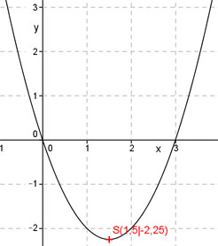

Aufgabe 26 Bestimmen Sie die Koordinaten des Scheitelpunktes S und der Nullstellen N der folgenden Funktion.? y = x2 - 3x Scheitelpunkt : y = x2 - 3x Quadratische Ergänzung : y = x2 - 3x + 2,25 – 2,25 Mit x2 - 3x + 2,25 = (x - 1,5)2 Scheitelpunktform : y = (x - 1,5)2 - 2,25 S(1,5|-2,25) Nullstellen : 0 = x2 - 3x 0 = x(x - 2) S(1,5|-2,25) Das Produkt x(x - 2) wird dann = 0, wenn entweder x = 0 oder x - 2 = 0 1. Nullstelle bei x = 0 N1(0|0) x - 3 = 0 |+3 x = 3 2. Nullstelle bei x = 3 N2(3|0) 